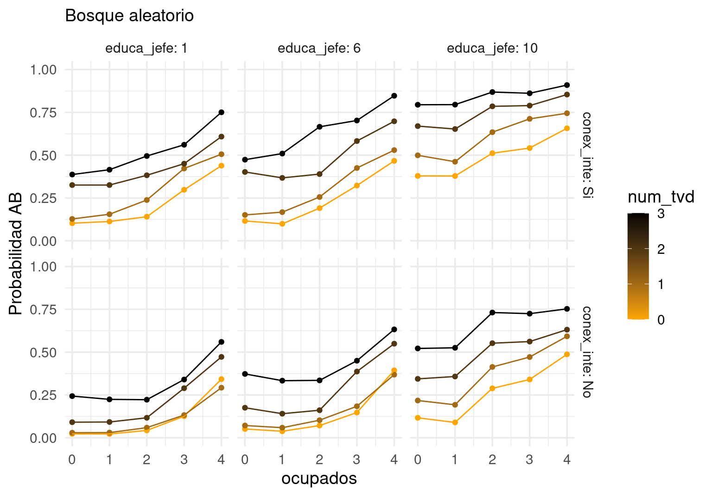
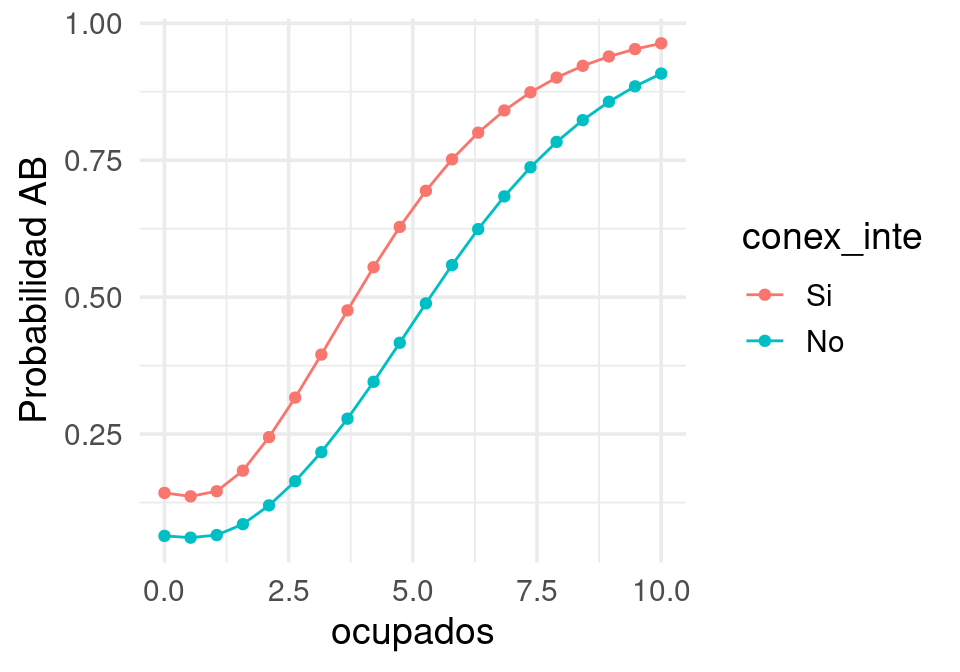
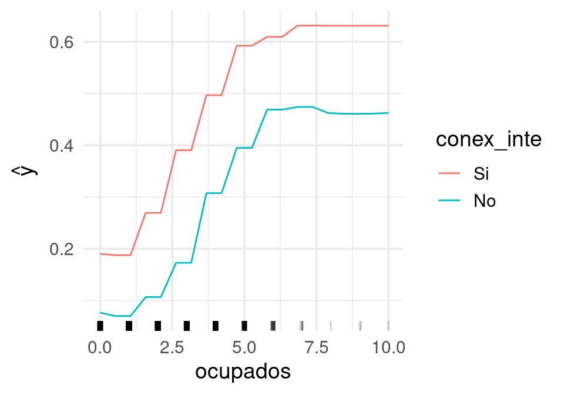
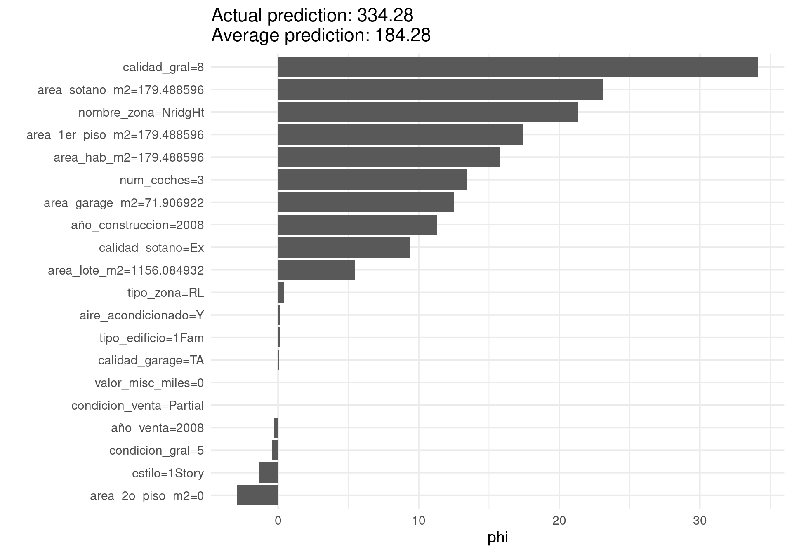
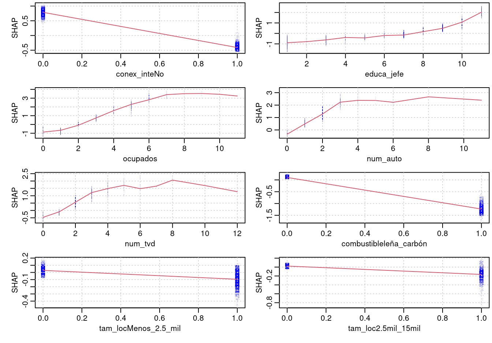
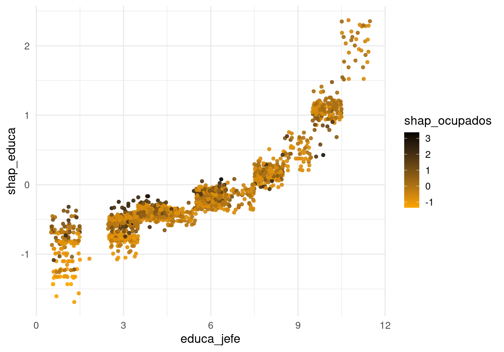
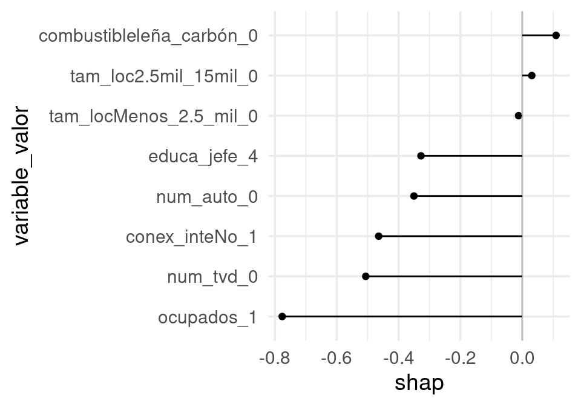
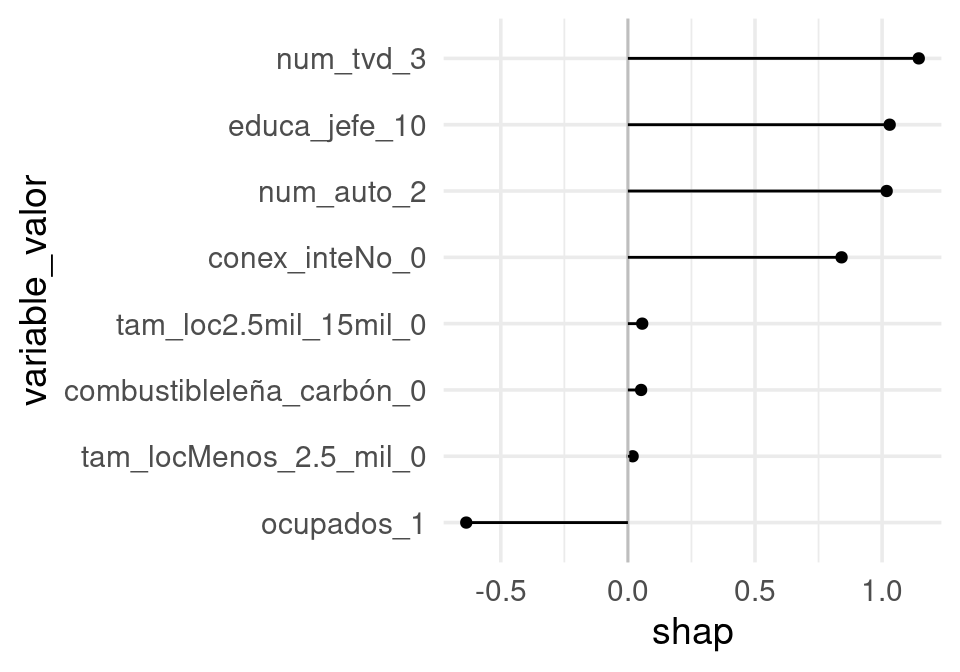

air_tbl <- as_tibble(airquality) |> filter(!is.na(Ozone) & !is.na(Solar.R)) |>
mutate(Temp = (Temp - 32)*5/9)
receta_base <- recipe(Ozone ~ Solar.R + Wind + Temp, air_tbl)
receta_int <- receta_base |>
step_interact(~ starts_with("Solar.R"):starts_with("Wind")) |>
step_interact(~ starts_with("Wind"):starts_with("Temp")) |>
step_interact(~ starts_with("Temp"): starts_with("Solar.R")) |>
step_ns(Solar.R, Wind, Temp, deg_free = 2)
modelo_bosque <- rand_forest(mode = "regression", trees = 5000, mtry = 1, min_n = 1)
modelo_reg <- linear_reg(mixture = 0.1, penalty = 1.0) |>
set_engine("glmnet")
ajuste_lineal <- fit(workflow() |> add_recipe(receta_int) |> add_model(modelo_reg),
air_tbl)
ajuste_bosque <- fit(workflow() |> add_recipe(receta_base) |> add_model(modelo_bosque),
air_tbl)14 Interpretación de modelos
En esta parte discutiremos diversas herramientas que sirven para entender cómo funcionan y hacen predicciones modelos particulares. La primera distinción importante es el tipo de interpretación que buscamos:
Entendimiento de causas/mecanismos: queremos aprender o encontrar hallazgos que nos ayuden a entender cómo funciona el fenómeno que nos interesa (por ejemplo, por qué la gente cancela su cuenta, por qué alguien cae en impago, etc.) Esta es una interpretación al nivel del proceso que genera los datos. Generalmente involucra afirmaciones obtenidos de inferencia causal: por ejemplo, si mostramos un anuncio más a las personas, su probabilidad de compra se incrementa en 10%. Este tipo de aprendizajes requiere esfuerzos que van más allá del análisis predictivo, y generalmente son más difíciles y/o costosos de obtener. Requieren conocimiento e investigación del dominio de interés, en muchos casos se requiere hacer experimentar más allá de lo los datos que son naturalmente producidos por un sistema.
Entendimiento de la estructura predictiva de un problema: en este caso, consideramos nuestro problema en función de una familia de modelos: ¿qué pasa cuando quitamos una variable? ¿cómo mejorar con ingeniería de entradas? ¿qué tipo de familias de modelos funciona mejor? En este punto argumentos estadísticos son útiles, los cuales nos permiten cuantificar distintas estructuras de acuerdo a su verosimilitud o probabilidad. Requiere también experimentar con distintos tipos de modelos, distintos tipos de entradas, etc.
Entendimiento del funcionamiento de un modelo dado: queremos entender cómo funciona un modelo particular ajustado que pensamos usar: ¿Cómo contribuyen las variables para construir las predicciones? ¿En qué variables se apoya el modelo para tener predicciones individuales? ¿Cómo podemos atribuir efectos a variables individuales para una predicción dada?
En esta sección nos concentramos en este último tipo de interpretación, que aunque es la más simple tiene dificultades considerables incluso para predictores relativamente simples. Este último problema es importante en sí:
- Es parte de los primeros dos tipos de entendimiento o interpretación (por ejemplo, ¿cómo funcionan las interacciones en este modelo particular?).
- Queremos explicar cómo nuestra predicción utiliza las variables de entrada para hacer predicciones (por transparencia, producir confiabilidad, o como diagnóstico que constrastamos con lo que sabemos del dominio de intéres).
- Queremos transparentar predicciones particulares, para saber cómo afectan distintas variables una decisión posterior basada en esa predicción (por ejemplo, por qué a alguien se le niega un crédito)
Esta sección también puede considerarse parte del uso responsable del aprendizaje automático. Entender qué variables son importantes para un modelo particular puede iluminar los modos en que puede fallar o producir decisiones subóptimas una vez que se incluyen en un proceso de toma de decisiones.
14.1 Interpretación: primeras observaciones
Consideramos entonces el problema de cómo entender un predictor dado que hemos ajustado. Hay varias maneras de aproximarnos a este problema:
- ¿Cuál es la contribución de una variable dada al desempeño predictivo del modelo?
- ¿Cómo cambia la predicción cuando una variable cambia?
- Dada una predicción particular, ¿cómo atribuimos contribuciones a la predicción de cada variable?
Usaremos como referencias nuestra referencia (Hastie, Tibshirani, y Friedman 2017). y el libro Interpretable Machine Learning.
14.2 ¿Cómo depende la predicción de las entradas?
Visualizaciones para algunas variables
Para modelos con relativamente pocas variables, es posible hacer gráficas que muestren el comportamiento de las predicciones sobre el espacio completo de entradas.
Ejemplo: Ozono
Consideramos construir un predictor (modelo lineal con interacciones y bosque aleatorio) de niveles de Ozono en términos de radiación solar, velocidad del viento y temperatura:
Calculamos ahora una rejilla que cruza las variables. Escogemos rangos de las variables dónde ocurren nuestros datos observados (para evitar extrapolaciones obvias - por ejemplo podemos usar el rango de las variables observadas) y graficamos:
cuantiles_viento <- quantile(air_tbl$Wind, c(0, 0.25, 0.5, 0.75, 1.0))
dat_g <- list(Solar.R = quantile(air_tbl$Solar.R, seq(0, 1, 0.1)),
Temp = quantile(air_tbl$Temp, c(0.05, 0.5, 0.95)),
Wind = cuantiles_viento[c(2,3,4,5)]) |>
expand.grid() |>
mutate(Wind_f = cut(Wind, cuantiles_viento, include.lowest = TRUE)) |>
mutate(Solar.R = as.integer(Solar.R))
dat_g |> head() Solar.R Temp Wind Wind_f
1 7 16.11111 7.4 [2.3,7.4]
2 37 16.11111 7.4 [2.3,7.4]
3 83 16.11111 7.4 [2.3,7.4]
4 137 16.11111 7.4 [2.3,7.4]
5 188 16.11111 7.4 [2.3,7.4]
6 207 16.11111 7.4 [2.3,7.4]Y ahora calculamos predicciones para cada valor conjunto de las variables. Conviene visualizar en lugar de usar tablas:
dat_g$pred_lm <- predict(ajuste_lineal, dat_g)$.pred
dat_g$pred_bosque <- predict(ajuste_bosque, dat_g)$.pred
#dat_g$Ozone <- air_tbl$Ozone
cuantiles_solar <- tibble(Solar.R = quantile(air_tbl$Solar.R, seq(0.1, 0.9, 0.1)))
dat_g <- dat_g |> pivot_longer(cols = pred_lm:pred_bosque,
names_to = "modelo", values_to = "pred")
air_graf_tbl <- air_tbl |> mutate(Wind_f = cut(Wind, cuantiles_viento, include.lowest = TRUE))
ggplot(dat_g, aes(x = Solar.R)) +
geom_point(data = air_graf_tbl, aes(y = Ozone, colour = Temp), alpha = 0.5) +
geom_line(aes(y = pred, colour = Temp, group=interaction(modelo, Temp, Wind_f))) +
facet_grid(modelo ~ Wind_f, labeller = label_both) +
scale_color_gradient(low="orange", high="black") 
Ejemplo: nse
Para modelos con menos de unas 10 variables, también podemos fijar algunas variables en valores que nos interesen, y variar las restantes. En el siguiente ejemplo, fijamos localidades urbanas con mas de 100 mil habitantes que cocinan con gas en tanque (que es la mayoría):
nse_tbl <- read_csv("../datos/vars_tarea_enigh_2016.csv")
nse_tbl$ab <- as.numeric(nse_tbl$nse == "AB") |> factor()
nse_entrena <- nse_tbl |> group_by(upm) |> sample_frac(0.5)
nse_prueba <- nse_tbl |> anti_join(nse_entrena)
mod_lineal <- glm(ab ~ conex_inte + splines::ns(ocupados, df = 3) + num_tvd + factor(educa_jefe) +
combustible + I(num_tvd>0):conex_inte + tam_loc,
family = "binomial", data = nse_entrena)
mod_bosque <- ranger::ranger(ab ~ conex_inte + ocupados + num_tvd + educa_jefe + tam_loc,
data = nse_entrena, mtry = 2,
num.trees = 1000, min.node.size = 100,
probability = TRUE)
grid_pred <- list(conex_inte = c("Si", "No"),
# casi 98% 4 o menos ocupados
ocupados = seq(0, 4, 1),
# 99% 2 o menos teles digitales
num_tvd = seq(0, 3, 1),
educa_jefe = c(1, 6, 10),
# y fijamos las siguientes dos variables:
tam_loc = c("100_mil"),
combustible = c("gas_tanque")) |>
expand.grid()
grid_pred$prob_glm <- predict(mod_lineal, grid_pred, type = "response")
grid_pred$prob_bosque <- predict(mod_bosque, grid_pred)$predictions[, 2]
g_1 <- ggplot(grid_pred, aes(x = ocupados, y = prob_bosque, colour = num_tvd,
group=factor(num_tvd))) +
facet_grid(conex_inte ~educa_jefe, labeller = label_both) + geom_point() +
geom_line()+
scale_color_gradient(low="orange", high="black" )
g_2 <- ggplot(grid_pred, aes(x = ocupados, y = prob_glm, colour = num_tvd,
group=factor(num_tvd))) +
facet_grid(conex_inte ~educa_jefe, labeller = label_both) + geom_point() +
geom_line() +
scale_color_gradient(low="orange", high="black" )
g_1 + ylim(c(0,1)) + labs(subtitle = "Bosque aleatorio") + ylab("Probabilidad AB")
g_2 + ylim(c(0,1)) + labs(subtitle = "Regresión logística") + ylab("Probabilidad AB")
Nótese que algunas combinaciones tienen muy poca probabilidad de ocurrir (por ejemplo, aquellos con 3 teles digitales sin conexión a internet), sin embargo, estas gráficas nos dan una idea de cómo cambia la predicción respecto a algunas variables.
14.3 Gráficas de dependencia parcial
Una desventaja de esta técnica ocurre cuando tenemos más de unas cuantas variables de entrada. En esos casos, no es tan práctico fijar las variables que no son de interés en valores dados, y las gráficas de dependencia parcial pueden ser útiles (ver también Hastie, Tibshirani, y Friedman (2017)). Comenzamos con el caso de dos variables:
Supongamos que tenemos un predictor \(f(x_1,x_2)\) que depende de dos variables de entrada. Podemos considerar la función \[{f}_{1}(x_1) = E_{x_2}[f(x_1,x_2)],\] que es el promedio de \(f(x)\) fijando \(x_1\) sobre la marginal de \(x_2\). Si tenemos una muestra de entrenamiento, podríamos estimarla promediando sobre la muestra de entrenamiento:
\[\bar{f}_1(x_1) = \frac{1}{n}\sum_{i=1}^n f(x_1, x_2^{(i)}),\]
que consiste en fijar el valor de \(x_1\) y promediar sobre todos los valores de la muestra de entrenamiento para \(x_2\). Ahora podemos graficar \(x_1\) contra \(\bar{f}_1(x_1)\) para entender el efecto marginal de esta variable.
Discusión.
El equivalente de las gráficas de dependencia parcial en regresión lineal consiste en considerar solamente la parte del modelo que depende de las variables que nos interesan. Por ejemplo, si \[f(x) = \beta_0 + \beta_1 x_1 + \beta_2 x_2 + \beta_3x_1^2 x_3\]
Podemos fijar \(x_1\) y promediar sobre la conjunta de \(x_2, x_3\), que da la función cuadrática: \[f_1(x_1) = \alpha_0 + \alpha_1 x_1 + \alpha_2 x_1^2\]. Si fijamos por ejemplo \(x_1\) y \(x_3\) obtenemos \(f_1(x_2) = \alpha_0 + \alpha_2 x_2\), lo cual nos da una interpretación similar a la de examinar los coeficientes en un modelo lineal.
Nótese que esto no es lo mismo que la predicción que haríamos condicionado a que \(X_1=x_1\), pues en ese caso tendríamos \[E(f(X)|X_1=x_1) = \beta_0 + \beta_1 x_1 + \beta_2E(X_2|X_1=x_1) + \beta_3 E(X_3|X_1=x_1) x_1^2,\] Que puede ser una función muy complicada de \(x_1\) si hay relaciones entre \(X_1\), \(X_2\) y \(X_3\). La interpretación que buscamos es la del primer ejemplo.
Ejemplo
Comparamos las gráficas de dependiencia parcial de Ozono vs Temperatura para los dos predictores que vimos arriba:
pred_fun <- function(object, newdata){
predict(object, newdata) |> pull(.pred) |> mean()
}
pd_temp_lm <- pdp::partial(ajuste_lineal,
train = air_tbl,
pred.var = "Temp", plot = FALSE,
pred.fun = pred_fun) |> as_tibble()
pd_temp_bo <- pdp::partial(ajuste_bosque,
train = air_tbl,
pred.var = "Temp", plot = FALSE,
pred.fun = pred_fun) |> as_tibble()
pd_grafs <- pd_temp_lm |>
rename(mod_lineal = yhat) |>
left_join(pd_temp_bo |> rename(mod_bosque = yhat)) |>
pivot_longer(cols = mod_lineal:mod_bosque, names_to = "modelo", values_to = "yhat")
ggplot(pd_grafs, aes(x = Temp, y = yhat, colour = modelo)) +
geom_point() + geom_line() + labs(subtitle = "Dependencia parcial para temperatura")En general, si nuestro predictor depende de más variables \(f(x_1,x_2, \ldots, x_p)\) entrada. Podemos considerar las funciones \[{f}_{j}(x_j) = E_{(x_1,x_2, \ldots x_p) - x_j}[f(x_1,x_2, \ldots, x_p)],\] que es el valor esperado de \(f(x)\) fijando \(x_j\), y promediando sobre el resto de las variables. Si tenemos una muestra de entrenamiento, podríamos estimarla promediando sobre la muestra de entrenamiento
\[\bar{f}_j(x_j) = \frac{1}{n}\sum_{i=1}^n f(x_1^{(i)}, x_2^{(i)}, \ldots, x_{j-1}^{(i)},\, x_j,\, x_{j+1}^{(i)},\ldots, x_p^{(i)}).\]
Podemos hacer también gráficas de dependencia parcial para más de una variable, si fijamos un subconjunto de variables y promediamos sobre el resto. Si \(X_S = (X_{i_1},X_{i_2},\ldots, X_{i_m})\) es un subconjunto de variables de \((X_1, \ldots, X_p)\) definimos:
\[f_{X_S}(x_s) = \frac{1}{n}\sum_{i=1}^n f(x_s, x_c^{(i)}),\]
que es una función de \(m\) variables, donde fijamos los valores de las variables en \(x_s\) y promediamos sobre los datos de entrenamiento para las entradas \(x_c\) que no están en \(x_s\).
Observaciones:
- Nótese que esta marginalización se hace sin condicionar a que fijamos el valor de \(x_1\), es decir: este procedimiento no es la predicción que haríamos si no conociéramos el valor de \(x_2\). En este caso tendríamos que condicionar al valor de \(x_1\) observado, y calcular promedios con \(E(x_2|x_1)\).
- Más bien interpretamos esta gráfica como el efecto promedio de \(x_1\), una vez que controlamos por \(x_2\). En la gráfica nos fijamos en los gradientes más que en los niveles.
- Como veremos más adelante, esta gráfica puede ser engañosa o poco interpretable cuando hay interacciones fuertes entre las variables fijas y sobre las que promediamos. En general, en presencia de interacciones fuertes el análisis marginal es poco útil.
- Adicionalmente, sustituimos el valor de las variables fijas (x1, por ejemplo), y promediamos sobre el resto, es posible que estemos evaluando puntos que nunca vimos en entrenamiento - es decir, puede ser que extrapolemos fuertemente. Esto puede producir artefactos poco interpretables en los modelos.
Ejemplo: Ozono
Cada variable adicional multiplica el tiempo de cómputo (pues la función se evalúa en una rejilla). Si el cálculo toma mucho tiempo, puedes especificar una rejilla con menos puntos.
pd_temp_lm <- pdp::partial(ajuste_lineal, train = air_tbl, pred.var = c("Temp", "Wind"), plot = FALSE, pred.fun = pred_fun) |> as_tibble()
pd_temp_bo <- pdp::partial(ajuste_bosque, train = air_tbl, pred.var = c("Temp","Wind"), plot = FALSE, pred.fun = pred_fun) |> as_tibble()
pd_grafs <- pd_temp_lm |> rename(mod_lineal = yhat) |>
left_join(pd_temp_bo |> rename(mod_bosque = yhat)) |>
pivot_longer(cols = mod_lineal:mod_bosque, names_to = "modelo", values_to = "yhat")Joining with `by = join_by(Temp, Wind)`# seleccionar puntos para evaluar viento, para hacer la gráfica
# más fácil de entender:
wind_cortes <- quantile(pd_grafs$Wind, seq(0, 1, 0.1), type = 1)
pd_grafs <- pd_grafs |> filter(Wind %in% wind_cortes)
ggplot(pd_grafs, aes(x = Temp, y = yhat, colour = Wind, group = Wind)) +
geom_line() + labs(subtitle = "Dependencia parcial para temperatura y viento") +
facet_wrap(~modelo)+
scale_color_gradient(low="orange", high="black" ) Ojo: Para evitar sobreinterpretar extrapolaciones en estas gráficas, podemos agregar información acerca de la distribución de cada variable, o restringir el rango de las variables que usamos en la gráfica.
cuantiles_temp <- tibble(Temp = quantile(air_tbl$Temp, seq(0.1, 0.9, 0.1)))
ggplot(pd_grafs, aes(x = Temp)) +
geom_line(aes(y = yhat, colour = Wind, group = Wind)) +
labs(subtitle = "Dependencia parcial para temperatura y viento") +
facet_wrap(~modelo)+
scale_color_gradient(low="orange", high="black" ) +
geom_rug(data = cuantiles_temp)Ejemplo: nse
Podemos usar el paquete iml también
library(iml)
set.seed(812)
# para hacer más rápidos los cálculos tomamos una muestra
# ojo: verifica que con distintas semillas obtienes resultados similares
dat_tbl <- nse_entrena |>
select(-piso_tierra) |>
sample_frac(0.2)
predict_glm <- function(mod, newdata){
predict(mod, newdata = newdata, type = "response")
}
pred_lineal <- Predictor$new(mod_lineal, data = dat_tbl,
predict.fun = predict_glm)
fe_nse <- FeatureEffect$new(pred_lineal,
c("ocupados", "conex_inte"), method = "pdp")
ggplot(fe_nse$results, aes(x = ocupados, y = .value, colour = conex_inte)) +
geom_line() + geom_point() + ylab("Probabilidad AB")
Y para objetos de ranger:
pred_ranger <- function(model, newdata){
predict(model, data = newdata)$predictions
}
predictor <- Predictor$new(
model = mod_bosque,
data = dat_tbl,
y = "ab",
class = 2,
predict.fun = pred_ranger,
type = "prob"
)
fe_nse <- FeatureEffect$new(predictor, c("conex_inte", "ocupados"), method = "pdp")
plot(fe_nse)
Ejemplo: interacciones
Mostramos cómo las gráficas de dependencia parcial pueden ser poco interpretables en el caso en que hay una interacción fuerte entre variables fijas y promediadas. En rojo mostramos la curva de dependencia parcial:
dat_ej <- tibble(x1 = rnorm(200, 0, 1), x2 = rbinom(200, 1, 0.5)) |>
mutate(y = x2 * x1^2 - (1 - x2) * (x1 + x1^2) + rnorm(200, 0, 0.001))
mod_1 <- lm(y ~ x1 + x2 + I(x1^2) + I(x1^2):x2 + x1:x2, data = dat_ej)
dp_lm <- pdp::partial(mod_1, train = dat_ej, pred.var = c("x1"), plot = )
ggplot(dat_ej, aes(x1)) + geom_point(aes(y = y, colour = factor(x2))) +
geom_line(data = dp_lm, aes(y = yhat), colour = "red",
linewidth = 1.1)En este caso, interpretar la curva de dependencia parcial es difícil, y necesitaríamos hacer dependencia parcial con x1 y x2 simultáneamente.
14.4 Importancia de variables
La importancia basada en permutaciones busca contestar la segunda de nuestras preguntas: ¿Cuánto contribuye cada variable al desempeño predictivo del modelo? En la sección de bosques aleatorios vimos la idea de importancia basadas en permutaciones. Podemos utilizar esta misma idea para cualquier modelo de interés, siguiendo la misma idea de Breiman:
- Ajustamos un modelo con un conjunto de entrenamiento y tomamos un conjunto de datos de validación.
- Para cada variable en el modelo, hacemos:
- Permutamos al azar la variable en el conjunto de validación
- Hacemos predicciones con nuestro predictor
- Evaluamos el error de predicción
- Obtenemos la diferencia del error de predicción con las variables no permutadas.
- A esta diferencia le llamamos importancia de la variable bajo el método de permutaciones.
Podemos repetir el proceso para varias permutaciones y promediar los resultados. También es posible producir rangos de error usando bootstrap, por ejemplo.
14.4.1 Ejemplo: precios de casas
source("../R/casas_traducir_geo.R")Rows: 1460 Columns: 81
── Column specification ────────────────────────────────────────────────────────
Delimiter: ","
chr (43): MSZoning, Street, Alley, LotShape, LandContour, Utilities, LotConf...
dbl (38): Id, MSSubClass, LotFrontage, LotArea, OverallQual, OverallCond, Ye...
ℹ Use `spec()` to retrieve the full column specification for this data.
ℹ Specify the column types or set `show_col_types = FALSE` to quiet this message.
Rows: 27 Columns: 3
── Column specification ────────────────────────────────────────────────────────
Delimiter: ","
chr (1): Neighborhood
dbl (2): lat, long
ℹ Use `spec()` to retrieve the full column specification for this data.
ℹ Specify the column types or set `show_col_types = FALSE` to quiet this message.set.seed(83)
casas_split <- initial_split(casas, prop = 0.75)
casas_entrena <- training(casas_split)
casas_pr <- testing(casas_split)
receta_casas <- recipe(precio_miles ~
nombre_zona +
area_hab_m2 + area_garage_m2 + area_sotano_m2 +
area_1er_piso_m2 + area_2o_piso_m2 +
area_lote_m2 +
año_construccion + año_venta +
calidad_gral + calidad_garage + calidad_sotano +
condicion_gral +
num_coches +
aire_acondicionado + condicion_venta +
valor_misc_miles +
tipo_edificio + estilo + tipo_zona,
data = casas_entrena) |>
step_filter(condicion_venta == "Normal") |>
step_ratio(area_2o_piso_m2, denom = denom_vars(area_1er_piso_m2)) |>
step_other(nombre_zona, threshold = 0.01, other = "otras") |>
step_select(-condicion_venta, skip = TRUE) |>
step_novel(nombre_zona, calidad_sotano, calidad_garage) |>
step_unknown(calidad_sotano, calidad_garage) |>
step_mutate(area_sotano_m2 = ifelse(is.na(area_sotano_m2), 0, area_sotano_m2)) |>
step_mutate(area_garage_m2 = ifelse(is.na(area_garage_m2), 0, area_garage_m2)) modelo_bosque <- rand_forest(mtry = 5, trees = 5000) |>
set_engine("ranger") |>
set_mode("regression") |>
set_args(respect.unordered.factors = "order")
flujo_bosque <- workflow() |>
add_model(modelo_bosque) |>
add_recipe(receta_casas)
bosque_ajustado <- fit(flujo_bosque, casas_entrena) library(iml)
# necesitamos esta función para el paquete iml
pred_iml <- function(model, newdata){
predict(model, new_data = newdata) |> pull(.pred)
}
predictor <- Predictor$new(model = bosque_ajustado, data = casas_pr,
y = "precio_miles", predict.fun = pred_iml)Haremos nuestra comparación en la métrica de error porcentual promedio. Hacemos varias repeticiones para suavizar la variación que produce el hecho de que tomamos permutaciones al azar de las variables:
vars_usadas <- extract_preprocessor(bosque_ajustado) |> pluck("var_info") |>
filter(role == "predictor") |>
pull(variable)
imp_bosque <- FeatureImp$new(predictor, loss = "mape",
compare = "difference", n.repetitions = 5, features = vars_usadas)
importancias <- imp_bosque$results |>
mutate(feature = fct_reorder(feature, importance))
ggplot(importancias, aes(x = feature, y = importance)) +
geom_hline(yintercept = 0, colour = "salmon") +
geom_point() + coord_flip()Podemos usar muestras bootstrap para repetir varias veces el análisis, y tener rangos de error debidos a la variación en la muestra de prueba. Por ejemplo, con 10 repeticiones bootstrap obtenemos rangos de variación (la muestra de prueba es de alrededor de 350 casos):
set.seed(12)
replica_boot <- function(datos, modelo, respuesta, vars_usadas){
datos_boot <- sample_n(datos, nrow(datos), replace = T)
predictor <- Predictor$new(model = modelo, data = datos_boot, y = respuesta,
predict.fun = pred_iml)
imp_bosque <- FeatureImp$new(predictor, loss = "mape",
compare = "difference", n.repetitions = 1, features = vars_usadas)
importancias <- imp_bosque$results
importancias
}
reps <- purrr::map(1:10, ~ replica_boot(casas_pr, bosque_ajustado, "precio_miles", vars_usadas)) |>
bind_rows()
reps <- reps |> mutate(feature = fct_reorder(feature, importance, mean))
ggplot(reps, aes(x = feature, y = importance)) +
geom_hline(yintercept = 0, colour = "salmon") +
geom_point() + coord_flip() +
geom_boxplot()14.4.2 Más de importancia predictiva
Interpretación de importancia
- La interpretación de importancia es siempre condicional a la muestra de entrenamiento. y al forma particular del modelo.
- Distintos hiperparámetros de ajuste, en particular, pueden producir estructuras de importancia distintas.
En el siguiente ejemplo probamos qué pasa con inclusión/exclusión de variables, o modelando o no la interacción:
Ejemplo
Consideramos un modelo con 4 entradas. La forma funcional verdadera es lineal, con una interacción entre \(x1\) y \(x2\)
n <- 200
set.seed(88)
dat_tbl <- tibble(x_1 = rnorm(n, 0, 1),
x_2 = sample(c(0, 1), n, replace = T),
x_3 = rnorm(n, 0, 1),
x_4 = rnorm(n, x_1, 0.2)) |>
mutate(y = x_1 + 2*x_4 + x_3 + 2*x_1*x_2 + rnorm(n, 0 , 0.2)) |>
mutate(tipo = sample(c("entrena", "valida"), n, replace = TRUE))
valida_tbl <- dat_tbl |> filter(tipo == "valida")
importancias <- function(valida_tbl, mod){
x <- valida_tbl |> dplyr::select(-y, -tipo)
predictor_1 <- Predictor$new(model = mod,
data = x, y = valida_tbl$y,
class = "regression")
imp <- FeatureImp$new(predictor_1, loss = "rmse",
compare = "difference", n.repetitions = 20)
imp
}
graficar_imp <- function(imp){
imp_tbl <- imp$results# |> mutate(feature = fct_reorder(feature, importance))
ggplot(imp_tbl, aes(x = feature, y = importance, ymax = importance, ymin= 0)) +
geom_point() + geom_linerange() + coord_flip()
}# sin interacción
mod_1 <- lm(y ~ x_1 + x_2 + x_3 + x_4, dat_tbl |> filter(tipo == "entrena"))
imp_1 <- importancias(valida_tbl, mod_1)
g_1 <- graficar_imp(imp_1) + labs(subtitle = "Sin interacciones")
mod_1 <- lm(y ~ x_1 + x_2 + x_3, dat_tbl |> filter(tipo == "entrena"))
imp_1 <- importancias(valida_tbl, mod_1)
g_0 <- graficar_imp(imp_1) + labs(subtitle = "Sin interacciones/ sin x4")# con interacción
mod_2 <- lm(y ~ x_1 + x_2 + x_3 + x_4 + x_1*x_2 + x_2*x_3,
dat_tbl |> filter(tipo == "entrena"))
imp_2 <- importancias(valida_tbl, mod_2)
g_2 <- graficar_imp(imp_2) + labs(subtitles = "Con interacciones")Observacion: La interpretación de importancia es siempre condicional al total de variables en el modelo. La inclusión o exclusión (o existencia o no de variables disponibles) de variables puede producir importancias muy distintas
mod_3 <- lm(y ~ x_1 + x_2 + x_3 + x_1*x_2 + x_2*x_3,
dat_tbl |> filter(tipo == "entrena"))
imp_3 <- importancias(valida_tbl, mod_3)
g_3 <- graficar_imp(imp_3)+ labs(subtitles = "Con interacciones / sin x4")library(gridExtra)
grafs <- list(g_0, g_1, g_3, g_2) |> purrr::map(function(g){ g + ylim(c(-0.5, 5)) })
grid.arrange(grobs = grafs, ncol = 2)Resumen
- La importancia por permutaciones muestra en qué variables se está apoyando el modelo para obtener su desempeño predictivo.
- La importancia de variables por permutaciones es una descripción del modelo particular que estamos considerando. Debemos tener cuidado al interpretar estas importancias de forma causal para el problema de interés.
- Esta técnica se puede aplicar a cualquier predictor usando una muestra de validación o prueba. También es posible utilizarla con la muestra de entrenamiento, y las dos versiones (entrenamiento y validación) pueden dar información útil.
14.5 Explicación de predicciones
Una tarea común que se puede requerir para transparentar las predicciones es distribuir contribuciones a la predicción de cada variable.
Consideremos una predictor \(f(X)\), y hacemos una predicción \(f(x)\) para un caso \(x = (x_1,x_2,\ldots, x_p)\) particular. ¿Cómo contribuye cada variable a la predicción f(x)?
Una manera común (ojo: no es la única) de asignar contribuciones si el modelo es lineal y no tiene interacciones es la siguiente:
Si \(f(X_1,\ldots, X_p) = \beta_0 + \beta_1 X_1 + \cdots + \beta_p X_p\) , y \(x^* = (x_1^*,x_2^*,\ldots, x_p^*)\) es un caso o instancia particular, podemos definir la contribución \(\phi_j = \phi_j (x^*)\) de la variable \(j\) en la predicción como
\[\phi_j = \beta_j(x_j^* - \mu_j),\] donde \(\mu_j\) es la media de la variable \(x_j\) (por ejemplo en el conjunto de entrenamiento). Podemos también definir fácilmente la contribución de un subconjunto \(W\) de variables dada, como \[\phi_W (x) = \sum_{j\in W} \beta_j(x_j^* - \mu_j)\].
Contribución es un buen nombre para estas cantidades, pues satisfacen (usando la linealidad y las definiciones de arriba):
- Las contribuciones suman la diferencia de la predicción con la predicción media: \[\sum_j \phi_j(x) = f(x) - E(f(x))\]
- Si una variable satisface \(\phi_W (x) = \phi_{W\cup j} (x)\) para cualquier subconjunto de variables \(W\), entonces \(\phi_j\) es cero.
- Si nuestro predictor se puede escribir como \(f(x) = f_1(x) + f_2(x)\) entonces la contribución de cada variable en la predicción \(f(x)\) es la suma de las contribución en \(f_1\) y en \(f_2\)
- Para cualquier subconjunto de variables, podemos considerar la contribución de una variable \(j\) cuando agregamos al subcojunto la variable \(j\) como \(\phi_{W \cup j} (x) - \phi_W (x)\). Si para cualquier subconjunto \(W\) tenemos que las variables \(j\) y \(k\) tienen la misma contribución al agregarlos a \(W\) (para toda \(W\)), entonces \(\phi_j =\phi_k\).
Ahora la pregunta es: ¿cómo definimos las contribuciones para un predictor \(f\) más complejo? (por ejemplo, un bosque aleatorio). Resulta que el concepto de contribución o atribución es uno que se estudia en teoría de juegos, y se puede demostrar que hay una sola forma de hacerlo cumpliendo las propiedades señaladas arriba: mediante los valores de Shapley.
Antes de seguir, veremos las dificultades que podemos encontrar para definir la atribución o contribuciones:
Ejemplo
Consideramos un modelo lineal para empezar. Por ejemplo \[f(x_1, x_2) = \beta_0 + \beta_1 x_1 + \beta_2 x_2,\] ¿Cómo podemos atribuir contribuciones de \(x_1\) y \(x_2\) para una entrada particular \(x^* = (x_1^*, x_2^*).\)
En primer lugar, podríamos ver qué pasa cuando pensamos que no tenemos ninguna variable disponible. Esta cantidad la podríamos definir como (promediando sobre la muestra de entrenamiento): \[v(0) = \frac{1}{N}\sum_i f(x_1^{(i)},x_2^{(i)}) = \beta_0 + \beta_1 \bar{x_1} + \beta_2\bar{x_2}\]
que es la predicción media (usamos linealidad de \(f\)).
Ahora supongamos que usamos la variable \(x_1\). En este caso, podríamos calcular una predicción promediando sobre la variable \(x_2\), que no tenemos disponible:
\[v(1) = \frac{1}{N}\sum_i f(x_1^{*},x_2^{(i)}) = \beta_0 + \beta_1 x_1^* + \beta_2\bar{x_2}\] Entonces la contribución cuando agregamos la variable 1 es: \[v(1) -v(0) = \beta_1(x_1^* - \bar{x_1})\] Ahora supongamos que ya tenemos la variable 2, y agregamos la variable 1. La predicción con todas las variables es \[v(1,2) = \beta_0 + \beta_1 x_1^* + \beta_2 x_2^*\] y cuando solo tenemos la variable \(2\) es \[v(2) = \frac{1}{N}\sum_i f(x_1^{(i)},x_2^{*}) = \beta_0 + \beta_1\bar{x_1} + \beta_2 x_2^*, \] y la contribución en este caso es: \[v(1,2) - v(2) = \beta_1 (x_1^* - \bar{x_1}),\] que es la misma cantidad que \(v(1)-v(0)\). Así que no importa como “incluyamos” la variable 1 bajo este criterio, el resultado es el mismo, y podemos definir la contribución de \(x_1\) como definimos arriba para un predictor lineal.
Ahora consideremos el caso más complicado donde tenemos una interacción multiplicativa:
\[f(x_1, x_2) = \beta_0 + \beta_1 x_1 + \beta_2 x_2 + \beta_3x_1x_2\]
Veremos qué pasa cuando seguimos la misma idea de arriba: en primer lugar, tenemos
\[v(0) = \frac{1}{N}\sum_i f(x_1^{(i)},x_2^{(i)}) = \beta_0 + \beta_1 \overline{x_1} + \beta_2\overline{x_2} + \beta_3\overline{x_1x_2}\]
y \[v(1) = \frac{1}{N}\sum_i f(x_1^{*},x_2^{(i)}) = \beta_0 + \beta_1 x_1^* + \beta_2\bar{x_2} + (\beta_3 \bar{x_2})x_1^*\] La contribución sería \[v(1)-v(0) = \beta_1(x_1^* - \bar{x_1}) +\beta_3\bar{x_2}\left(x_1^*-\frac{\overline{x_1x_2}}{\bar{x_2}}\right)\] Por otro lado, igual que arriba
\[v(2) = \frac{1}{N}\sum_i f(x_1^{(i)},x_2^{*}) = \beta_0 + \beta_1\bar{x_1} + \beta_2 x_2^* + \beta_3x_2^*\bar{x_1}\]
y entonces: \[v(1,2) - v(2) = \beta_1(x_1^*-\bar{x_1})+ \beta_3x_2^*(x_1^* - \bar{x_1})\] Y las cantidades \(v(1) - v(0)\) y \(v(1,2)- v(2)\) no son iguales en este caso. Tenemos dos órdenes distintos para poner las variables en el modelo, así que ponemos:
\[\phi_1 = \frac{1}{2}(v(1,2)-v(2)) + \frac{1}{2}(v(1)-v(0)).\] y análogamente para \[\phi_2 = \frac{1}{2}(v(1,2)-v(1)) + \frac{1}{2}(v(2)-v(0)).\]
Nótese que estas cantidades satisfacen: \(\phi_1 + \phi_2 = v(1,2) -v(0) = f(x_1^*, x_2^*) - \frac{1}{N}\sum_i f(x_1^{(i)}, x_2^{(i)}),\)
es decir, la diferencia entre la predicción que nos interesa y la predicción media, que es la primera propiedad que buscábamos.
Consideremos ahora el caso de 3 variables, y nos interesa encontrar la contribución de la variable 1. Ahora tenemos 6 órdenes distintos para poner las variables en el predictor. Dos de ellos terminan con \(v(1,2,3) - v(2,3)\), uno de ellos contiene la comparación \(v(1,2)-v(2)\), uno de ellos contiene la comparación \(v(1,3)-v(3)\) y dos de ellos contiene la comparación \(v(1)-v(0)\). Así que ponderaríamos:
\[\phi_1 = \frac{2}{6}(v(1,2,3) - v(2,3)) + \frac{1}{6}(v(1,2)-v(2)) + \frac{1}{6}(v(1,3)-v(3)) + \frac{2}{6}(v(1)-v(0))\] Puedes checar que \(\phi_1+ \phi_2 +\phi_3 = f(x_1^*, x_2^*, x_3^*) - \frac{1}{N}\sum_i f(x_1^{(i)}, x_2^{(i)}, x_3^{(i)})\). Los valores así definidos satisfacen todas las propiedades que discutimos arriba.
14.5.1 Valores de Shapley
La idea principal en los valores de Shapley es que para entender la contribución de una variable, es necesario considerar su contribución según distintos órdenes en el que consideramos las variables.
Definimos primero la contribución de un conjunto de variables \(S\subset M,\) donde \(M =\{x_1, x_2\ldots, x_p\}\), marginalizando como sigue con la muestra de entrenamiento:
Suponiendo que \(S = \{1,2,3,\ldots ,k\}\) entonces \[v(S) = \frac{1}{N}\sum_i f(x_1^*,x_2^*,\ldots, x_k^*, x_k^{(i)}, x_{k+1}^{(i)}, \ldots, x_p^{(i)})\] Donde se mantienen fijos los elementos de \(S\), y promediamos sobre los elementos que no están en \(S\). Esto podemos hacerlo para cualquier subconjunto \(S\) de variables. Ahora consideramos una variable dada \(j\), y consideramos las diferencias: \[v(S\cup {j}) - v(S)\] Es decir, cuánto contribuye la variable \(j\) cuando la agregamos a las variables que ya teníamos en \(S\).
El valor de Shapley de la variable \(j\) es
\[\phi_j = \sum_{S\subset M, j\notin S} \frac{|S|!(M - |S| -1)!}{M!} (v(S\cup j) -v(S))\]
Los ponderadores están dados como discutimos arriba: hay \(M!\) posibles ordenamientos de las variables. Los ordenamientos que incluyen la comparación \(v(S\cup j) -v(S)\) satisfacen: las primeras \(|S|\) variables pueden haber entrado de \(|S|!\) maneras, luego sigue la \(j\), y el restante de las variables pueden entrar de \((M-|S|-1)!\) maneras.
Ejemplo: precios de casas
Consideremos entonces el bosque que construimos arriba para los precios de casas, y consideramos una casa particular:
set.seed(232)
shapley_val <- Shapley$new(predictor, x.interest = casas_entrena[21,])
shapley_val$results <- filter(shapley_val$results, feature %in% vars_usadas)
shapley_val$plot()La suma de los valores phi da (aproximadamente, por el algoritmo usado) la diferencia entre nuestra predicción para esta instancia y la predicción promedio:
sum(shapley_val$results$phi)[1] -10.40783Ahora hacemos otro ejemplo:
shapley_val <- Shapley$new(predictor, x.interest = casas_entrena[52,])
shapley_val$results <- filter(shapley_val$results, feature %in% vars_usadas)
shapley_val$plot()sum(shapley_val$results$phi)[1] -47.69727shapley_val <- Shapley$new(predictor, x.interest = casas_entrena[121,])
shapley_val$results <- filter(shapley_val$results, feature %in% vars_usadas)
shapley_val$plot()
Observaciones:
Nótese que las contribuciones de cada variable en un mismo nivel puede ser diferente en diferentes instancias, pues los modelos que usamos típicamente incluyen interacciones.
Calcular sobre todas las posibles permutaciones de las variables es demasiado costoso. Para estimar el valor de Shapley, en iml se toma una muestra de permutaciones, y para cada una se calcula el valor correspondiente \(v(S\cup j) - v(S),\) dependiendo dónde aparece \(j\), y promediando sobre las variables que no aparecen en \(S\) como mostramos arriba. No es necesario ponderar la muestra de permutaciones.
Existen también versiones adaptadas a los árboles que son más rápìdas.
Ejemplo
Para un modelo de clasificación, xgboost calcula los valores de shapley en la escala logit (del predictor lineal)
library(xgboost)
nse_tbl <- nse_entrena %>% ungroup %>%
dplyr::select(ab, conex_inte, ocupados,
num_tvd, educa_jefe, tam_loc, combustible, num_auto)
mat_x <- model.matrix(ab ~ -1 + ., nse_tbl)
d_entrena <- xgb.DMatrix(data = mat_x, label = nse_tbl$ab)
boost_nse <- xgboost(mat_x, label = as.numeric(nse_tbl$ab == "1"),
nrounds = 500, eta = 0.1,
max_depth = 3, subsample = .5,
objective = "binary:logistic", nthread = 2, verbose = 0)
shap_nse <- xgb.plot.shap(mat_x, model = boost_nse, top_n = 8, n_col = 2)
pred_base <- mean(nse_tbl$ab==1)data <- shap_nse$data
contrib <- shap_nse$shap_contrib
dat_g <- tibble(educa_jefe = data[, "educa_jefe"], shap_educa = contrib[, "educa_jefe"],
shap_ocupados = contrib[, "ocupados"], ) %>%
sample_n(2000)
ggplot(dat_g, aes(x = educa_jefe, y = shap_educa, colour = shap_ocupados)) +
geom_jitter(alpha = 0.9, width = 0.5, height = 0) +
scale_color_gradient(low="orange", high="black")
Y podemos ver predicciones individuales:
graf_caso <- function(data, contrib, ind_caso, pred_base){
dat_tbl <- tibble(variable = colnames(data), valor = data[ind_caso, ],
shap = contrib[ind_caso,]) %>%
unite("variable_valor", variable, valor) %>%
mutate(variable_valor = fct_reorder(variable_valor, shap))
pred_logit <- log(pred_base / (1-pred_base)) + sum(dat_tbl$shap)
pred <- 1 / (1 + exp(-pred_logit))
sprintf("Predicción base: %0.2f, Predicción: %0.2f", pred_base, pred) %>% print
ggplot(dat_tbl, aes(x= variable_valor, y = shap, ymax = shap, ymin = 0)) +
coord_flip() +geom_point() + geom_hline(yintercept = 0, colour = "gray") +
geom_linerange()
}
graf_caso(data, contrib, 10, pred_base)[1] "Predicción base: 0.18, Predicción: 0.88"
graf_caso(data, contrib, 102, pred_base)[1] "Predicción base: 0.18, Predicción: 0.48"
Discusión:
Un valor de contribución que puede ser más apropiado para los valores Shapley es condicionando en cada caso a la información que se tiene durante el proceso de adición de variables. Es decir, usamos \[v(S) = E_{X_C|X_S}\left [ f(X_S,X_C) \, | \, X_S = x_s^* \right].\] Esta cantidad es teóricamente más apropiada para hacer predicciones cuando “no tenemos” las variables de \(X_C\). Sin embargo, calcular esta cantidad es considerablemente difícil, pues requiere modelar también la conjunta de \((X_1,\ldots, X_p)\), lo cuál en general es difícil. Hasta en regresión lineal, incluso sin interacciones, no es trivial hacer estos cálculos. Generalmente se utilizan como mostramos arriba. Una desventaja clara del proceso como lo mostramos arriba es que puede ser que al hacer estos promedios, usemos partes del modelo con poca información y malas predicciones. Los valores de Shapley pueden ser ruidosos en este caso.
Los que mostramos arriba son llamados comunmente valores SHAP o explicación aditiva de Shapley. Existen muchas variaciones de la aplicación de valores de Shapley para entender predictores y es un tema de investigación activo.